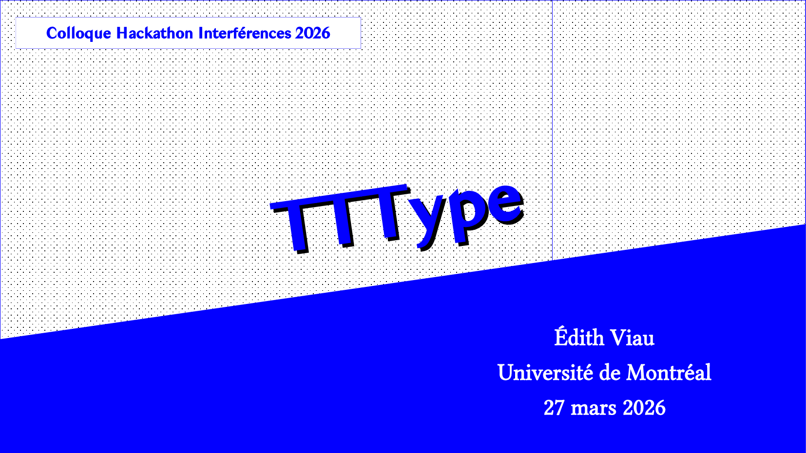
Avant tout, merci à toute l’équipe d’organisation de ce hackathon pour la tenue de cet évènement. Ce fût un plaisir de passer les trois derniers jours à travailler intensément sur des solutions possibles à un problème thématique commun. Une bonne main d’applaudissement pour l’organisation et pour l’ensemble des personnes participantes!
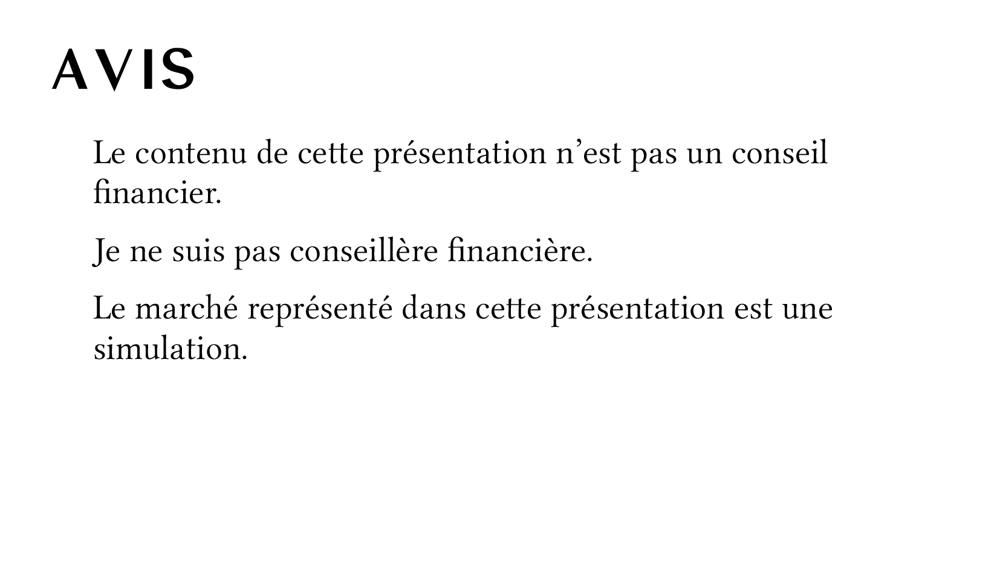
Je ne suis pas conseillère financière et cette présentation n'est pas un conseil financier.
Merci d'adresser vos questions financières personnelles à des gens qualifiés pour y répondre.
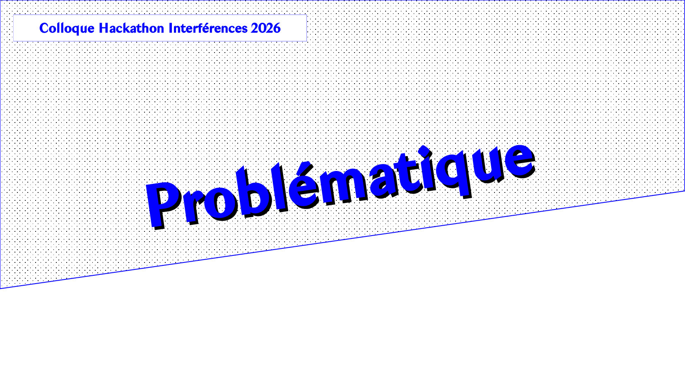
Petit rappel sur la thématique de ce hackathon Interférences 2026… l’intelligence artificielle et le futur – notre futur en tant qu’êtres humains. Quels sont les impacts actuels et escomptés de ces algorithmes d’apprentissage machine et de création automatique ? À quoi pouvons-nous nous attendre? Comment y faire face? Comme nous avons beaucoup discuté de cette problématique tout au long du hackathon, je m’en tiendrai à ce bref rappel..
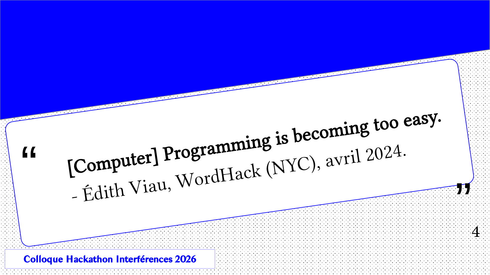
À mes yeux, le principal risque est le suivant : les choses complexes, comme la programmation informatique, sont sur-simplifiées et deviennent faciles, trop faciles peut-être?
Du moins, c’est ainsi que je me suis exprimée en avril 2024 lors de l’évènement WordHack, une assemblée d’artistes technologues à New York : la programmation informatique est devenue trop facile
En effet, avec les développements récents en intelligence artificielle génératives, nos emplois, nos connaissances et notre culture [informatique] sont en danger… comment pouvons-nous faire face aux défis qui se présentent à nous de façon pragmatique et… efficace?
Comment éviter l’écroulement du système financier de financement et de refinancement de l’éducation supérieure? Sans oublier celui du marché immobilier, possiblement en état de surchauffe suite aux surenchères effectuées par les ingénieur.e.s informatiques et leurs managers, rendues possibles par leurs salaires élevés?
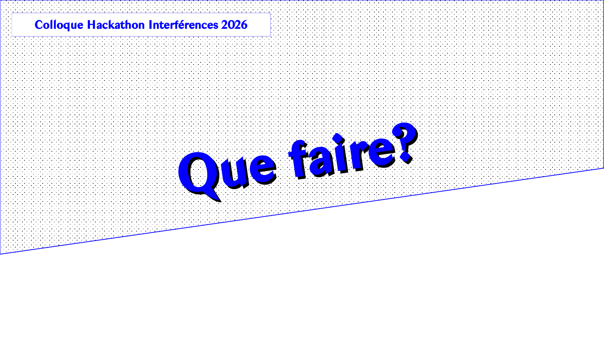
La solution que je propose ne sera pas aisée à implémenter, mais j’ose croire que le prototype que je m’apprête à vous présenter saura vous charmer. Je le nomme : TTType, pour Type and Trade and Type. La version que je présente aujourd’hui est une version revue pour le marché local. Notez que ce projet est hors concours pour le hackathon puis qu’il est basé sur un projet précédent et que ceci contrevient aux règles du hackathon. Merci à l’équipe d’organisation pour leur flexibilité – sans cela, je n’aurais pas pu présenter le projet.
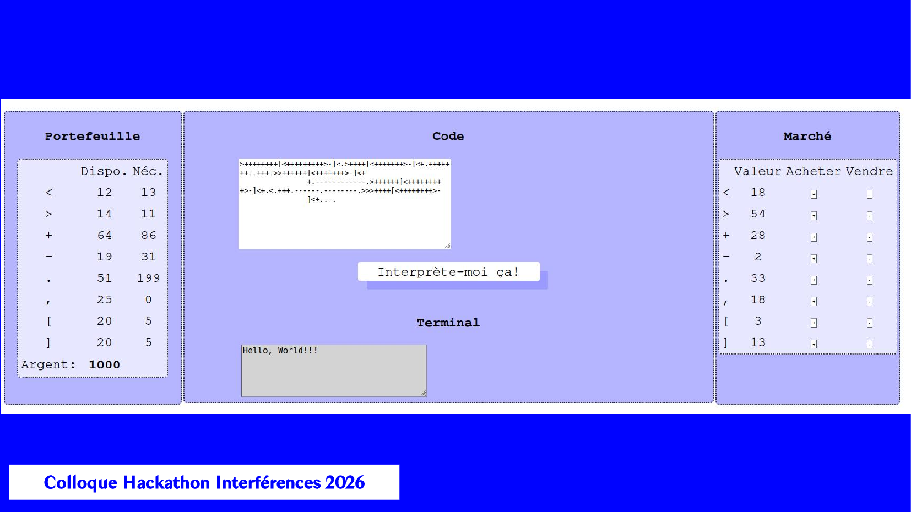
[capture d’écran du marché] Type and Trade and Type est un prototype de marché financier pour les symboles réservés utilisés dans un langage de programmation donné. Ainsi, lorsqu’une personne programme un logiciel informatique, celle-ci devra se procurer les éléments du code (les lettres mais aussi les symboles comme les parenthèses ou les signes de ponctuation, ou encore les symboles invisibles, comme les espaces et les sauts de ligne ou de paragraphe) sur un marché virtuel où ces éléments seront cotés et ce, en temps réel. Et oui, même les espaces! Ceci nous donne un nouveau sens à l’expression « main invisible du marché ». Cette étape superflue et artificielle agira comme une étape-tampon entre les programmes générés en tout ou en partie par l’IA et les programmes codés par un être humain. Une des conséquences possibles est l’émergence de nouveaux langages ou programmes informatiques qui tenteront de capitaliser sur le fait que certaines lettres ou symboles sont moins utilisés que d’autres.
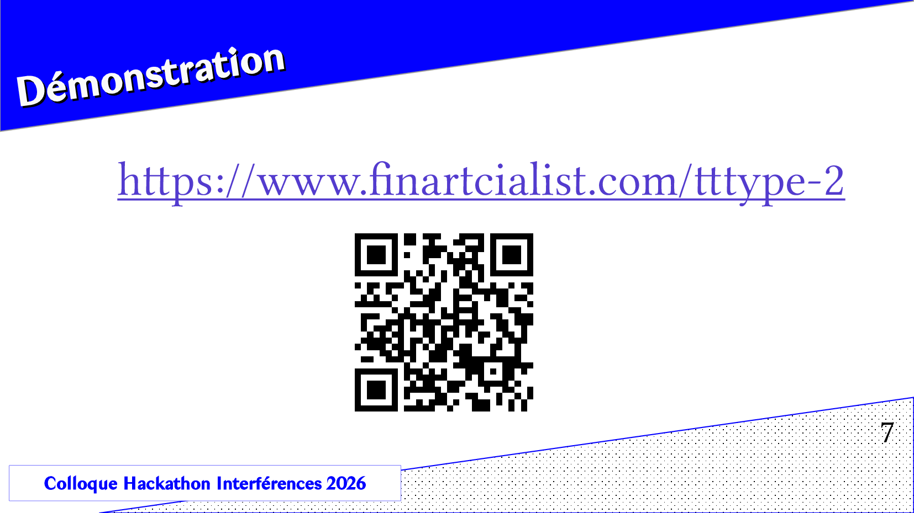
Lien et code QR vers le site TTType 2 - version en français.
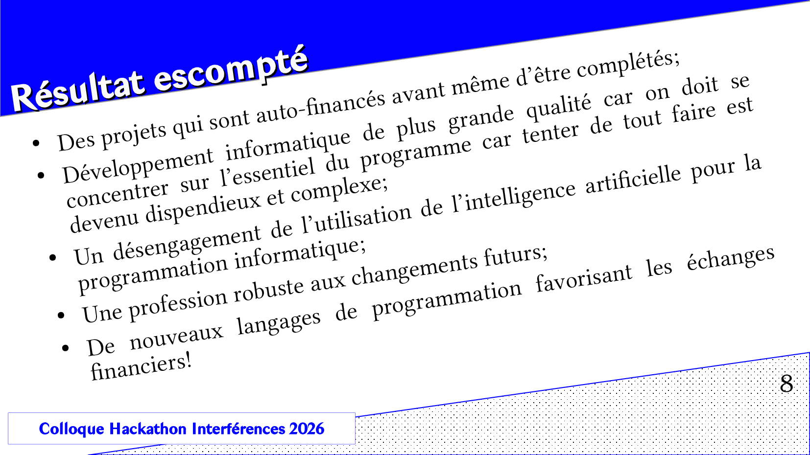
Résultats escomptés: Des projets qui sont auto-financés avant même d’être complétés; Développement informatique de plus grande qualité car on doit se concentrer sur l’essentiel du programme car tenter de tout faire est devenu dispendieux et complexe; Un désengagement de l’utilisation de l’intelligence artificielle pour la programmation informatique; Une profession robuste aux changements futurs; De nouveaux langages de programmation favorisant les échanges financiers!
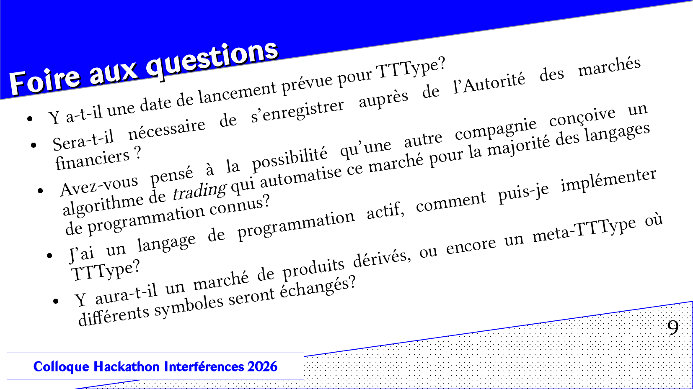
Foire aux questions: Y a-t-il une date de lancement prévue pour TTType? Sera-t-il nécessaire de s’enregistrer auprès de l’Autorité des marchés financiers ? Avez-vous pensé à la possibilité qu’une autre compagnie conçoive un algorithme de trading qui automatise ce marché pour la majorité des langages de programmation connus? J’ai un langage de programmation actif, comment puis-je implémenter TTType? Y aura-t-il un marché de produits dérivés, ou encore un meta-TTType où différents symboles seront échangés?
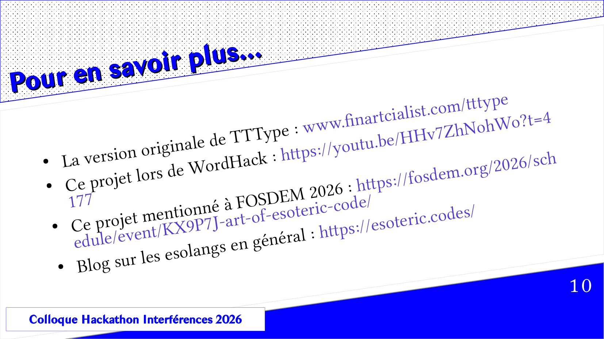
Pour en savoir plus...
La version originale de TTType // Ce projet lors de WordHack // Ce projet mentionné à FOSDEM 2026 // Blog sur les esolangs en général
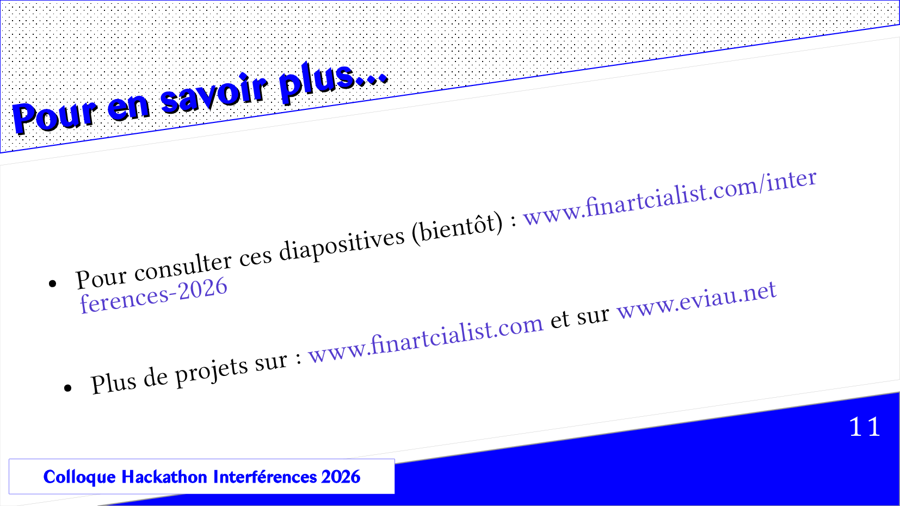
Pour consulter ces diapositives (bientôt) Plus de projets sur : finartcialist.com et sur eviau.net
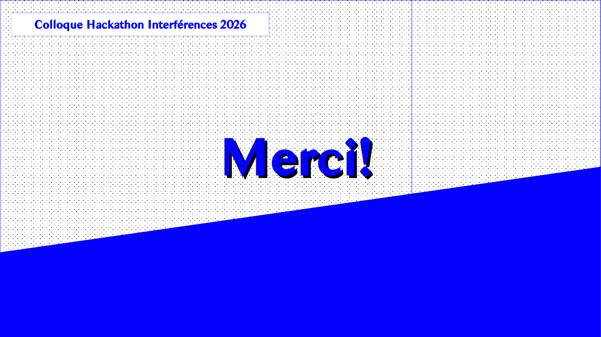
Merci pour votre écoute et votre attention et bonne chance à toutes les équipes participantes du hackathon interférences 2026!